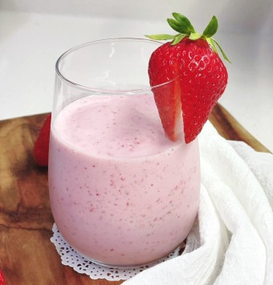

김예진
저는 단국대학교 소프트웨어학과 3학년 20학번 김예진 입니다.
제가 이번학기에 수강하고 있는 과목들은
오픈소스SW활용
과
알고리즘
과
운영체제
이고, 이번 학기를 잘 마무리하고 싶습니다.
제가 좋아하는 것들은 하늘과 캐릭터
올라프
입니다.
맨 위에 있는 제 이름 김예진 위에 마우스를 올리면 올라프 이미지가 나타납니다.
저는 아래와 같이 맑은 하늘을 좋아합니다.
저는 딸기 스무디와 
강아지도 좋아합니다.